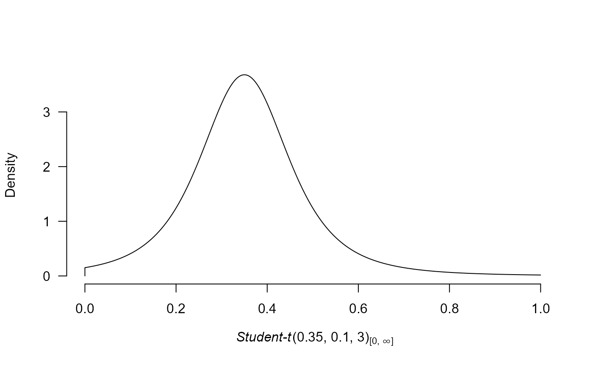

prior_informed creates an informed prior distribution based on past
research. The prior can be visualized by the plot function.
Arguments
- name
name of the prior distribution. There are many options based on prior psychological or medical research. For psychology, the possible options are
"van Erp"for an informed prior distribution for the heterogeneity parameter tau of meta-analytic effect size estimates based on standardized mean differences (van Erp et al. 2017),
"Oosterwijk"for an informed prior distribution for the effect sizes expected in social psychology based on prior elicitation with dr. Oosterwijk (Gronau et al. 2017).
For medicine, the possible options are based on Bartoš et al. (2021) and Bartoš et al. (2023) who developed empirical prior distributions for the effect size and heterogeneity parameters of the continuous outcomes (standardized mean differences), dichotomous outcomes (logOR, logRR, and risk differences), and time to event outcomes (logHR) based on the Cochrane database of systematic reviews. Use
"Cochrane"for a prior distribution based on the whole database or callprint(prior_informed_medicine_names)to inspect the names of all 46 subfields and set the appropriateparameterandtype.- parameter
parameter name describing what prior distribution is supposed to be produced in cases where the
namecorresponds to multiple prior distributions. Relevant only for the empirical medical prior distributions.- type
prior type describing what prior distribution is supposed to be produced in cases where the
nameandparametercorrespond to multiple prior distributions. Relevant only for the empirical medical prior distributions with the following options"smd"for standardized mean differences
"logOR"for log odds ratios
"logRR"for log risk ratios
"RD"for risk differences
"logHR"for hazard ratios
Details
Further details can be found in van Erp et al. (2017) , Gronau et al. (2017) , and Bartoš et al. (2021) .
References
Bartoš F, Gronau QF, Timmers B, Otte WM, Ly A, Wagenmakers E (2021).
“Bayesian model-averaged meta-analysis in medicine.”
Statistics in Medicine, 40(30), 6743–6761.
doi:10.1002/sim.9170
.
Gronau QF, Van Erp S, Heck DW, Cesario J, Jonas KJ, Wagenmakers E (2017).
“A Bayesian model-averaged meta-analysis of the power pose effect with informed and default priors: The case of felt power.”
Comprehensive Results in Social Psychology, 2(1), 123–138.
doi:10.1080/23743603.2017.1326760
.
van Erp S, Verhagen J, Grasman RP, Wagenmakers E (2017).
“Estimates of between-study heterogeneity for 705 meta-analyses reported in Psychological Bulletin from 1990–2013.”
Journal of Open Psychology Data, 5(1), 1–5.
doi:10.5334/jopd.33
.
Examples
# prior distribution representing expected effect sizes in social psychology
# based on prior elicitation with dr. Oosterwijk
p1 <- prior_informed("Oosterwijk")
# the prior distribution can be visualized using the plot function
# (see ?plot.prior for all options)
plot(p1)

# empirical prior distribution for the standardized mean differences from the oral health
# medical subfield based on meta-analytic effect size estimates from the
# Cochrane database of systematic reviews
p2 <- prior_informed("Oral Health", parameter ="effect", type ="smd")
print(p2)
#> Student-t(0, 0.51, 5)